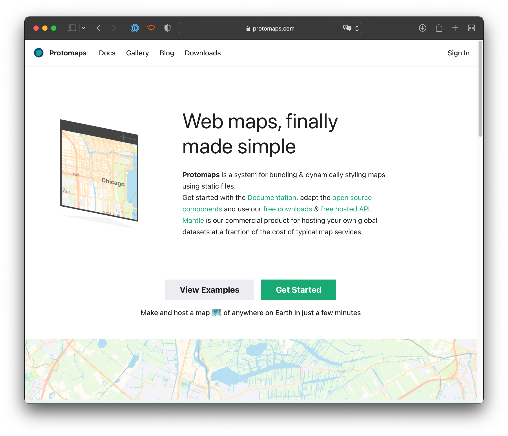
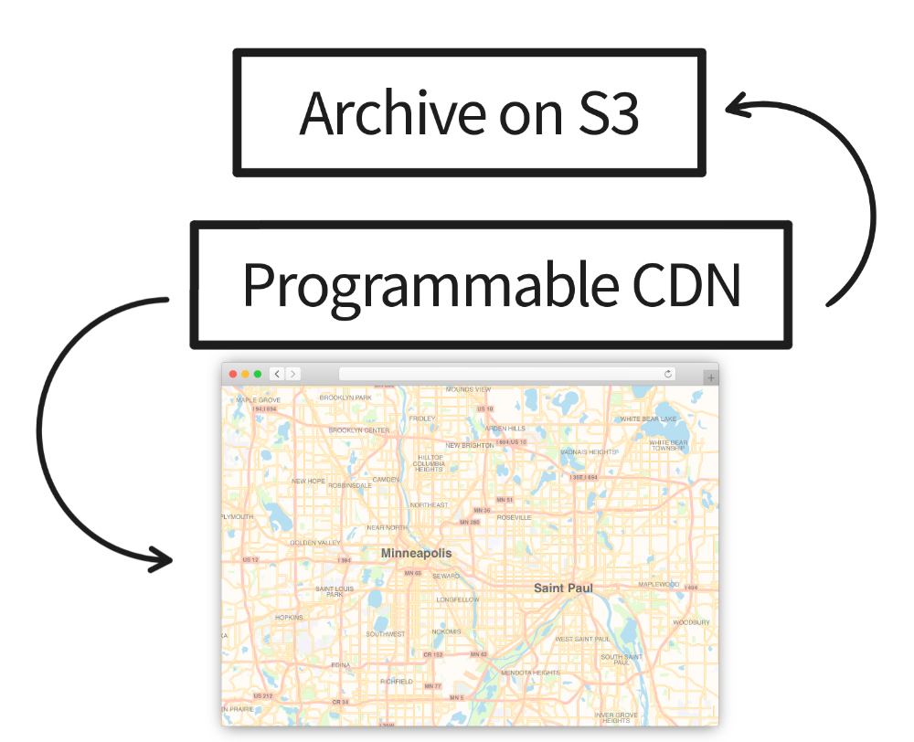
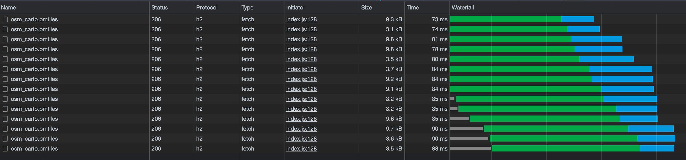

☁⛈️
No Two Clouds Are Alike!
Storage Challenges for Cloud-Optimized Geodata
Brandon Liu, Protomaps LLC

- Protomaps is end-to-end system for packaging and styling maps using static files
- Cloud-native from the ground up (PMTiles)
- open source components: github.com/protomaps

- Mantle - vector basemap product on your own cloud
- Lambda @ Edge / Cloudflare Workers
- Vendor neutrality is a key part of value proposition
PMTiles spec is built on cloud-native principles
HTTP 206 Partial Content- Spatial index
- commodity cloud storage
- What I learned from real-world deployment of vector PMTiles on different clouds
- applies to other cloud-optimized formats as well - FlatGeobuf, COG, COPC...
Challenge Areas
- Performance
- Security
- Freshness
"Cloud-optimized": optimized for latency, not bandwidth
- Enables slippy-map user experience with overviews
- Enables interactive queries without full scans
- Enables extracting area of interest

- HTTP/2 multiplexing is vital for concurrent HTTP requests from browser
- Most vendors support only HTTP/1.1 on core storage platform; HTTP/2 feature of separate CDN product
- Example: Google Cloud Storage supports HTTP/2
Byte Serving + Compression
- Vector formats don't have de facto domain compression like PNG, JPG
206 Partial Content incompatible with HTTP Content-Encoding- Browser DecompressionStream API not widely implemented
- Multipart
Range: bytes=0-100, 100-150 generally not supported by storage
Security
- Serving files from storage direct to browser = good!
- General use case involves cross-origin requests
- example: S3 CORS configuration allows multiple origins
- Other storage providers allow only one origin or wildcard
*
the Mapster challenge
206 Partial Content also allows download of entire dataset: No DRM!- Public hosting on cloud storage risks runaway costs
- No cloud implements "206 only" access policy
- Requester Pays a vendor-specific solution
Freshness
- Even with read-optimized design, need updates
- Replace whole file on cloud storage and use opaque ETag to detect changes
- Implementations and caches can use
ETag for staleness check
- Spec designs can consider this - no sidecars!
Conclusions
- Performance, Security, Freshness should influence spec and implementation design
- Cloud Storage market is competitive + evolving
- Don't build for AWS S3 only please üôÇ